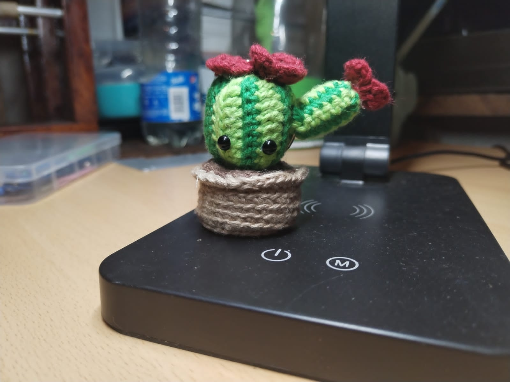
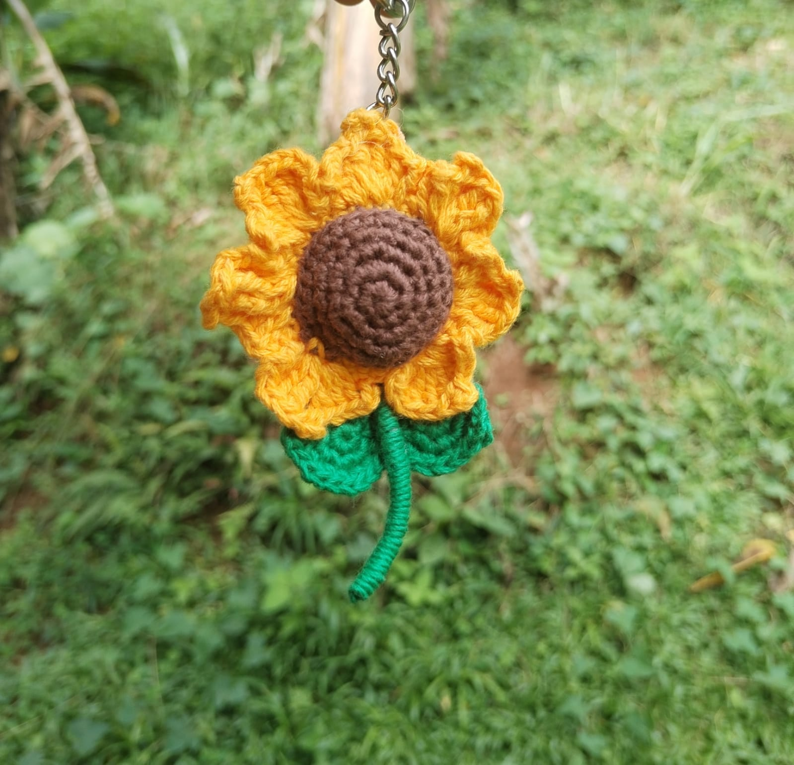
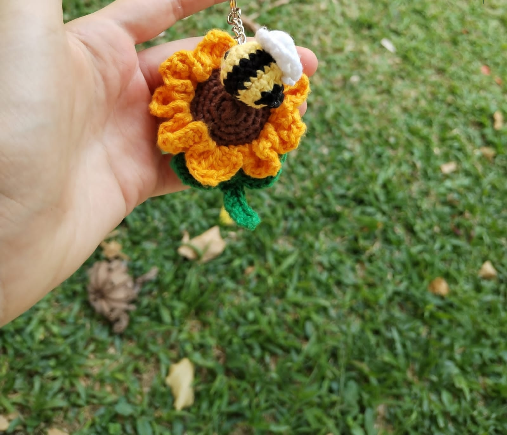
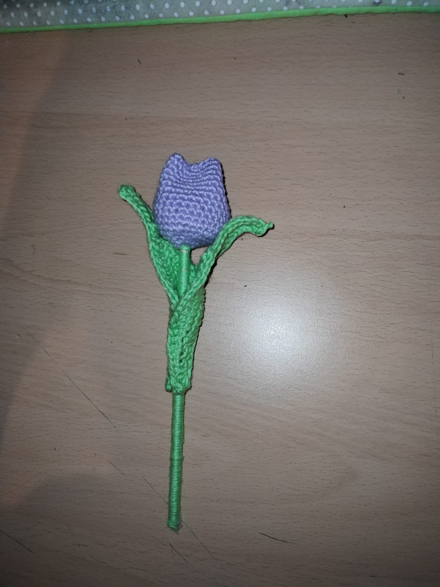
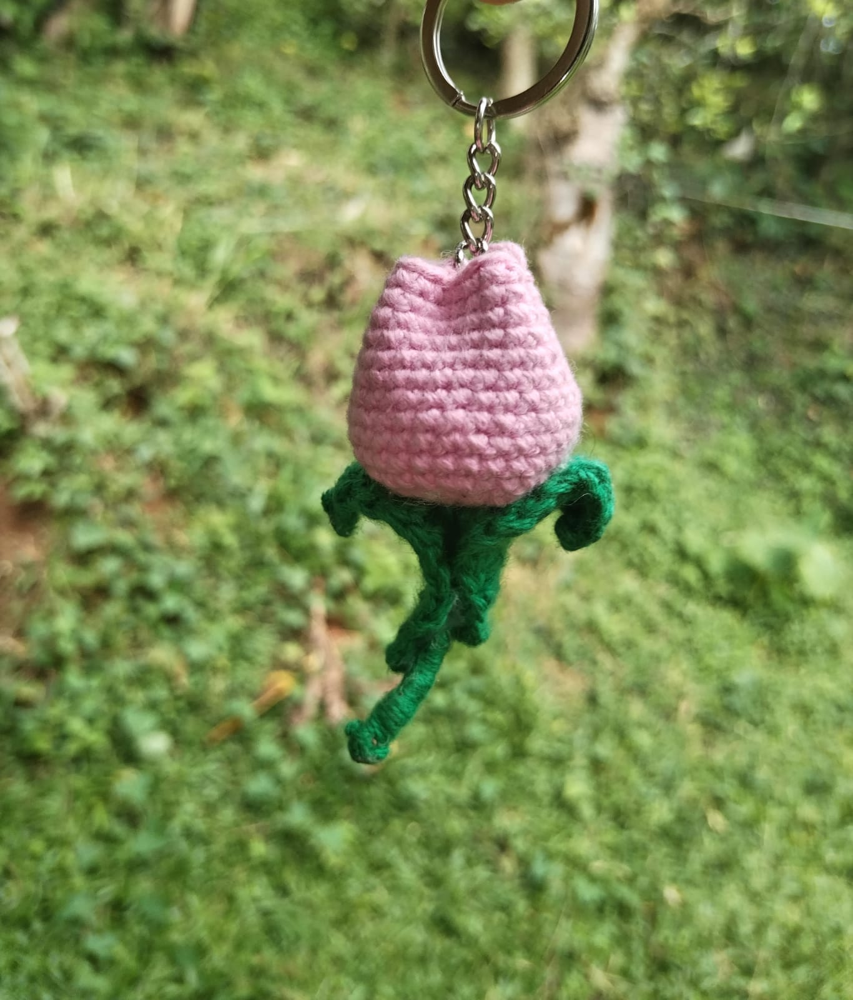
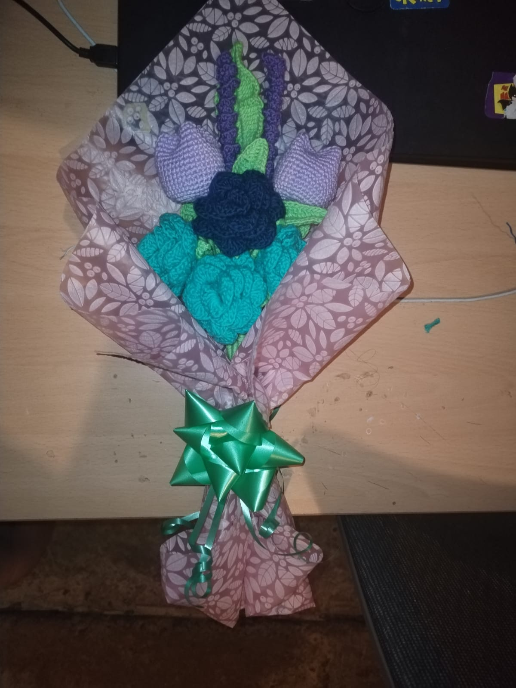

Llaveros de Flores

Llavero Captus
Descripción: Llavero de Captus tejido a mano.
Tamaño: 4 cm aproximadamente
Precio: ₡4.500

Llavero Girasol
Descripción: Llavero de Girasol tejido a mano.
Tamaño: 5 cm aproximadamente
Precio: ₡4.500

Llavero Girasol Con Abejita
Descripción: Llavero de Tortuga Girasol con abejita a mano.
Tamaño: 6 cm aproximadamente
Precio: ₡5.800

Llavero Tulipan Grande
Descripción: Llavero de Tulipan Grande tejido a mano.
Tamaño: 10 cm aproximadamente
Precio: ₡6.000

Llavero Tulipan Pequeño
Descripción: Llavero de Tulipan Pequeño tejido a mano.
Tamaño: 5 cm aproximadamente
Precio: ₡5.000

Llavero Ramo de flores
Descripción: Llavero de Ramo de flores tejido a mano.
Tamaño: 15 cm aproximadamente
Precio: ₡16.000